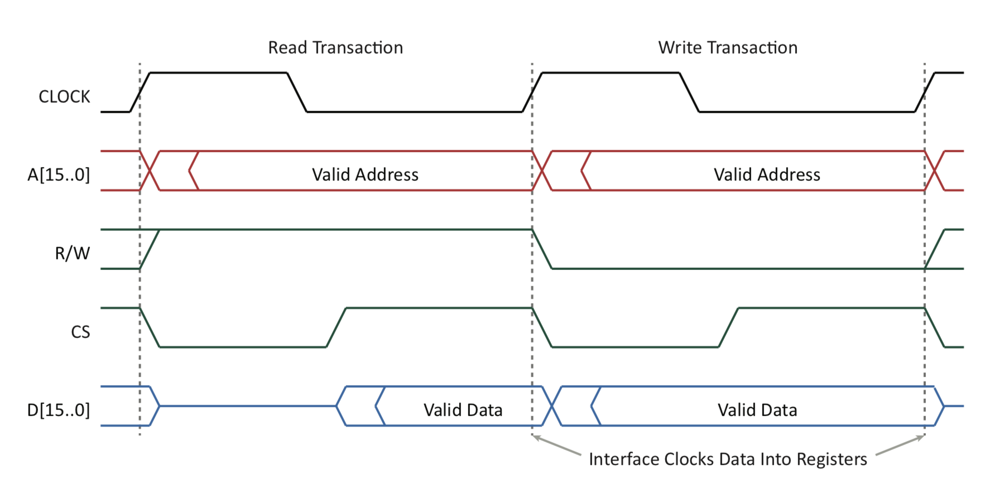
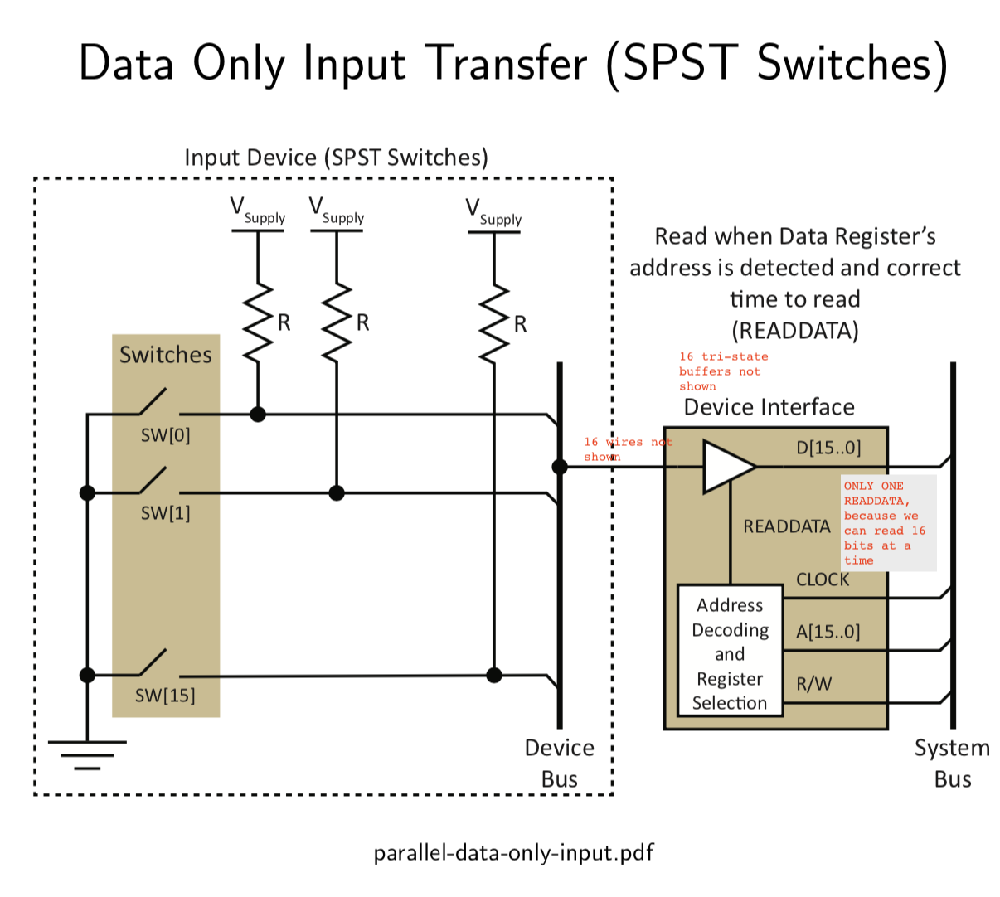

The interface could sometimes update its own status (here show inside the interface logic block, with bidirectional arrows for status signals and control signals)
This is also a good mental model for general parallel interfaces
Communication Across the Interface
parallel-interface-domains
Property
Processing Domain
Device Domain
Signal Levels
Signal levels match the CPU (low voltage)
Signal levels match the device (varies)
Timing
Predictable; memory-like; inflexible (n number of clock cycles)
Often unpredictable; depends upon device
Bus Control Signals
R/W (direction control) and CLOCK (timing)
Perhaps none; depends upon device
Bus Delays
Fixed; known upper-bound
Variable; depends upon device, and what it is doing
Data Persistence
Transient; exists for one bus transaction
Persistent or transient; depends upon device
There is no way to convert transient data to persistent, because after some point the data buffer overflows and the data is lost
System Bus Side
General signal groups within a bus:
Data – bi-directional between the processor and devices (including memory)
Selection - memory location or I/O device must be uniquely selected (addressing)
Control - transfers must be synchronized:
Data transfer synchronization signals (e.g., R/W, CLOCK, …),
Bus control signals (e.g., REQUEST, GRANT, … ), and often
Processor arbitration signals (e.g., IRQ, …)
At this point in the course, we can make the following assumptions:
A memory mapped I/O device (as opposed to a 2-bus structure)
An interface with more than 1 register memory-mapped (assume 4 registers - control, status, data in, data out - allows for bi-directional flow)
A synchronous bus with a global clock
Timing similar to that illustrated on the next slide…
Sample System Bus
parallel-bus-timing-example
See above that the clock is high for more time than low to manage the edges of Chip Select (CS)
The chip select gets generated using the clock (low), relevant address (address on bus matches what we have), read or write (eg: read only device which ignore writes)
most devices respond on both read and write
Device Bus Side
Unidirectional buses – Simplicity
Low cost (no need for direction control or arbitration)
Makes software interfacing easier to do
This can also be done by having one wire for read and one wire for write if you still want bi-directional flow of data
Eg: switches, LEDs
Bi-directional buses – Versatility
Direction control type
Explicit (Data Direction Register)
Implicit (no Data Direction Register)
Bus driver implementation alternatives
Passive Pull-up (often implemented as Open Collector) - explicit or implicit
Tri-State - explicit only
Pseudo Bi-directional - implicit only
Direction control frequency
Static: port direction is configured once during initialization - content consumer (youtube)
Dynamic: port direction changes frequently during operation - Eg: content creator on youtube (creates + also wants likes), printer (two ways, because it senses whether the device has stapling support, whether it has enough ink etc), computer mouse (changing software sensitivity actually changes things on the mouse hardware configuration wise)
Bus Driver Structure
When you have a driver, it has the ability to either connect or not connect to its voltage line
Closing both the switches would cause a short-circuit
We could replace either the top switch or the bottom switch with the a resistor because that would limit resistances and then we would not have to worry about the switches being mutually exclusive
Driver Implementation Alternatives
Totem-Pole Driver: Two mutually exclusive switches are used. A logic-0 is applied to the signal line by closing the pull-down switch and opening the pull-up switch. A logic-1 is applied to the signal line by opening the pull-down switch and closing the pull-up switch.
standard driver in any logical gate, if its not labeled as 0/E or 0-E, and does not have an enable signal then its going to be a totem pole driver
logical gates almost never have an input signal
Passive Pull-Up Driver: Replaces the pull-up switch with a resistor. A logic-0 is applied to the signal line by closing the pull-down switch. Otherwise, the resistor passively pulls the signal line to a logic-1.
Passive Pull-Down Driver: Replaces the pull-down switch with a resistor. A logic-1 is applied to the signal line by closing the pull-up switch. Otherwise, the resistor passively pulls the signal line to a logic-0.
Tri-State Driver: Two switches are used. The logic driving the control inputs permits both switches to be off at the same time. When both are off, the driver is in a high-impedance state.
all the tri-state drivers are being driver by ReadData (which is not what it is always going to be called, and is going to be produced by the Register Selection Logic)
Also notice that the DeviceData and D are labelled differently becuase they are inherently different, one is inside the device, other is outside
Transient Data Capture
- If we were to remove DeviceData[15:0] at the second increasing edge then it would not affect the D[15:0] signal in the second cycle because we would have already captured the data in the Data In register
we want rising edge to align with the master signal, which is why we are inverting the clock signal, this way we get the data at the time when it is most stable
it is only at the end of the first cycle will the data actually be updated, and the DeviceData register will hold the data until it is written to again
CPU/System Bus + Device Interface + Device Bus/Device itself
Explicit Bidirectional Data / Unsynchronized / Tristate Buffer
When can the interface drive the DeviceData lines?
it can drive when DDR is all 1 in this case, and it can read it when DDR is all 0
How does the device drive the DeviceData lines?
by using the control signals
What additional control signals are necessary?
This design is incomplete but a good start..
The only difference between control and the actual data is only the address, you can only talk to one register at a time inside the parallel interface. First set control, then the data in consecutive clock cycles
Explicit Bidirectional Data / Transient Data Capture / Tristate Buffer
parallel-interface-explicit-bidirectional-data
This mechanism it enables the device to know whether it is being reading from, or being read to. And the output of the DDR could be all 16 lines, but if we presume them to be all one then we could just send one wire
Also presumably, the DDR arrives before the data so that the device has enough time to control its interfacing itself
To make this work fine there should be tri-state buffer on the device side, not shown here
Implicit Bidirectional Data / Transient Data Capture / Passive Pullup
- Allows us to remove the DDR, if Address has all 0’s, then DeviceData[15:0] will all be 0
Conflict:
CPU: 0x1234
Device: 0x2468
Conflict between active 0 and passive 1
comparing nibbles:
CPU: 0001 0010 0011 0100
DEV: 0010 0100 0110 1000
OUT: 0000 0000 0010 0000
The shared signal on the bus will actually be neither of the values of, which is wrong, and is a mathematical combination of the two sides, and is an example of when the two sides are failing to cooperate
In order for information to be exchanged both sides have to be co-operating, one side transmitting, one side receiving, and here we are using the addressing mechanism, but we need to still figure out a way to communicate with the device which does not have a bus that can be used for “addressing” per se
If we want to read, then we need to drive the open collector buffer to high Z, because otherwise we will be writing one of the lines that we want to read (i.e. we don’t wanna actually override)
Explicit Bidirectional Data / Transient Data Capture / Passive Pullup
When DDR = 1 (Output Mode), X = Data and some of the device data lines are driven low by the interface
At power-up, the DDR must be set to a value of 0 (only safe state)
When DDR = 0 (Input Mode), X = 0 and the device data lines float high unless driven low by the device
When DDR = 1 (Output Mode), X = Data and some of the device data lines are driven low by the interface
At power-up, the DDR must be set to a value of 0 (only safe state)
As earlier, the other side should cooperate, and if it does not we get weird outputs
We have a DDR but it is not really needed
Pseudo Bi-Directional Ports (Implicit Bidirectional Data / Passive Pullup)
parallel-interface-pseudo-bidirectional-port
X[15..0] = Q[15..0]
If Q[0] = 0, then DeviceData[0] is actively driven to 0
If Q[0] = 1, then DeviceData[0] is passively driven to 1 (i.e., floats high)
To read a value from a device attached to the DeviceData lines, the Data Out Register must first be set to a value of all 1’s (0xFFFF)
One read, needs 2 cycles, one to write to direction, and then one to read but Multiple back to back reads can be done in 4 cycles
Companies like Intel etc. use it a lot because it is cheaper to manufacture
Data Characteristics
Whenever two systems communicate there is a question as to how data can be passed from one domain to the other. This transfer may include:
Signal Translation (light ↔ electrical, or 5 V ↔ 3 V, or 5 V ↔ 10 mA)
Synchronization (When should data be read or written?)
Consider the following dimensions to the problem:
Data may be either persistent or transient
will it exist for as long as we need it
The source of the data may either inform or not inform the receiver that the data is present
how much notification do we need from the system, i.e. control signals
The receiver may (or may not) request new data when it is ready for the data
can data be demanded by the receiver
Control Signalling
There are two general techniques to pass control information between two entities:
In-Band: Some (or all) control information is communicated in the same way that data is transferred. For example, a control-C in a text string resembles ordinary data, but it may be interpreted as a special control character.
In the above example, the “\n” means an escape sequence, and is an example of an In-Band control information, that can be passed as data but cannot be confused as data. More examples: “\a” for alert, “\t” for tab, “\r” for carriage return, “\\” for a single backslash. If something doesn’t equal to the text we use it as, then it cna be considered an escape character
Out-of-Band: Control information is communicated using techniques that cannot be confused with the transmission of data.
For example, wireless control information may be transmitted using frequencies not used to transmit data, control information may be transmitted on the data lines of a bus at a time when data is never present, or control information may be transmitted on signal lines dedicated to the transmission of control information.
Signalling of Data Changes
Consider the challenge of transmitting two identical data values back-to-back:
For example, how might you tell the difference between the transmission of two data values of 0x76 and one data value of 0x76?
Using the In-Band approach, the only indication that there has been a change is the fact that the value on the data lines is different than it was previously (e.g., a different key has been pushed). This would require very special operating specifications. One alternative, from among many, is to insert a special control character between identical consecutive values.
Using the Out-of-Band approach, the most straightforward alternative is to use an extra signal line to indicate the presence of valid data and its duration
Data Persistence
Consider data persistence from the perspective of the consumer of the data:
Persistent data may be accepted at the convenience of the consumer. After the data has been consumed, the producer is notified.
Transient data must be accepted within a fixed time after being produced. The consumer does not notify the producer of data consumption.
a good example is a keyboard input where we can set a minimum time, and humans are slower so it should be fine
parallel-data-persistence
Handling Persistent Data
How might you handle persistent data?
A fully-interlocked protocol can be implemented with out-of-band signalling
Data produced: Valid
Data received: Accepted
Fully Interlocked protocol: data valid rising before data accept rising, data valid falling edge before data accept falling edge
Out-of-band signalling can be used to detect changes in data
Double-buffering can be used to extend the time window for data to be consumed
We sometimes just have to infer when there is no data for Transient data (If we have Data Available then we don’t need an edge detection device, because the flip flop itself can do the work and detect when data exists/changes)
If we have more data then we can store the data temporarily with the data buffer, and then when the CPU is ready it can read from the buffer. So if CPU is busy, then buffer fills up, and then CPU can read easily from buffer whenever it is ready
Double Buffering: One register for immediate storage, and data buffer for the system bus
Debouncing Noisy Input Data
Mechanical switch inputs may be noisy due to bouncing - contact plates need to touch, and they might not actually make a great connection, moreover there might not even touch for current to arc between the two plates of the switch when they get super close but don’t touch
the older the switch, the more corrosing, the more wear and tear, the more debouncing
Debounced switches can be built using more expensive SPDT switches instead of SPST switches as illustrated to the right
The SPDT solution assumes that a switch will not bounce from one throw to the other
software solution: one way to handle is to literally ignore the input when we see it fluctuate
hardware solution: use a capacitor, one shot capacitor
B and C are active low output signal, and feed them into an RS latch, and this has to do with the set reset stage between the two input lines to the latch (the two lines bounce at independent times, i.e. R is zero and S bounces or S is zero and R bounces)
Debouncing Options
The duration of the bouncing is often unknown and may change over time
Software approaches include the following:
Option 1: Wait a fixed amount of time using a delay loop
but you need to guess this amount
Option 2: Wait until the signal is stable
repeatedly read and then if you see its stable then good for you
Hardware approaches include the following:
Option 1: Wait a fixed amount of time using a counter or shift register
Option 2: Slow down the signal transitions using a one-shot capacitor
normal capacitor but it slows down the signal and it gives us a stable output
Option 3: Use a more expensive switch attached to an RS latch
Mostly software option 1 is used, because its the cheapest
Synchronization - Control Line Issues
What should be done when new input data is available?
Set a status bit to notify the CPU of new input data
Assert an interrupt request signal to notify the CPU of new input data
Clock device data into an interface data register
What should be done when new output data is available?
Set a status bit to notify the device of new output data
Clock CPU data into an interface data register
When should status bits be set or cleared?
Set status bits when a new data event occurs
Implicitly clear the status using control logic
Wait for the software to explicitly clear the status
Which control signal edge is the active edge?
Data Only Input Transfers
parallel-data-only-input
No obvious time constraints
No event information (i.e. no signal to assert when button is pressed or not)
Possibility of switches bouncing (we could insert a capacitor to handle this)
Data input using MOVE DATA, R0
Data Only Output Transfers
parallel-data-only-output
No obvious time constraints
No event information
No notification of changes
Data output using MOVE R0, DATA
Its easier to sink a wire by a register than source a wire, which allows the LED to light up (1 for off, 0 for on)
Changing the resistance would change the intensity of the LED, increasing R, decrease brightness
Continuously switch it on and off in software and it would appear to be less bright
Capturing Most Recent Transient Data
Implicit Status Clearing
parallel-interface-event-capture-recent
Status Register
Set to 1 when an event occurs
Cleared to 0 when data is read
Data In Register
Set to data when an event occurs
Overwritten if not read in time
This is the most recent data since if we there is new data before we read, the existing data will get overwritten.
We need the Status Register to assert validity of the data.
DeviceEvent, DataStable, Logic1 becomes 1, status becomes 1, CPU reads status, CPU consumes Data, data read, reset status using READDATA
Explicit Status Clearing
parallel-interface-event-capture-recent-explicit
The status register in this design must be explicitly reset by the software toggling a bit in the control register
When an event is detected:
Software must set control register to 1
Software must then clear control register to 0
If the control register is not cleared, new data may be missed
Notice how we have to write to the control signal twice, because its not an instantaneous thing but we need
Device events comes in, gets stored in data register, sets data 1 to status register
CPU pulls status register, realises data to be pulled, actually reads the data
Then CPU sets the control signal to reset, and then sets the control signal back to 0 to stop resetting
Capturing First Transient Data
Implicit Status Clearing
parallel-interface-event-capture-first
Status Register
Set to 1 when an event occurs
Cleared to 0 when data is read
Overrun Register (second status register, to detect whether data is being lost or not)
Set to 1 when data already stored and an event occurs
Cleared to 0 when data is read
Data In Register
Set to data when data not already
stored and an event occurs
Data stored until read
1st Novelty : how do we get the first transient data? 2nd Novelty : how do we do overrun detection? (the hardware in the lab is doing something like this for Lab 2)
Capturing Persistent Data
Implicit Status Clearing
parallel-interface-event-capture-persistent
Note the behavior of DataAccepted:
Set to 1 at power-up
Cleared to 0 when an event occurs
Set to 1 when data has been read
The device must co-operate to avoid losing data
Questions of Interest
Short Answer
How do you hook up a switch and LED to the same port?